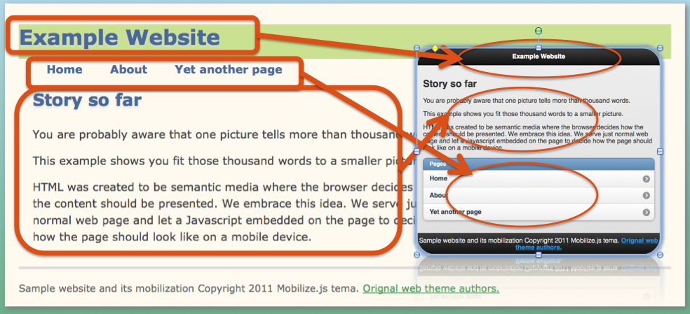
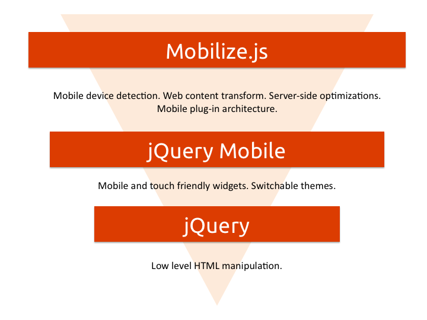

Introduction¶
About¶
Mobilize.js transforms websites to mobile sites with Javascript: it is easy to integrate with any system, looks good and uses technologies familiar for web developers.
The revolutionary idea behind Mobilize.js is that it pushes difficult content presentation choices to a web browser instead trying to figure them out on a server. This is embracing of the original philosophy of HTML mark-up language: the browser knows best how the page should look like. With Mobilize.js we serve a normal web page and let an embedded Javascript file decide should the page be mobilized.
Mobilize.js will do the same for internet mobilization what Google Maps did for map services.
Benefits¶
Modern mobile devices are smart enough to decide what is the best way to display the content for their users.
The client orientation and lack of complex server-side dependencies makes Mobilize.js simple and easy to integrate to any web system. You need only to add one <script> tag; it works even on static HTML files. You deploy it easily and tap the potential of quickly growing mobile internet. Mobilize.js won’t stop you updating your server.
Mobilize.js is written in Javascript and jQuery - both which are ubiquitous technologies for HTML5 developers. Mobilize.js is the most developer friendly mobilization solution out there. You learn it easily, getting more done in less time.
How it works¶
mobilize.js <script> tags are inserted on your HTML source code like with any other Javascript library. Then you give what web site elements belong to mobile site.
When the web page loads, mobilize.js checks whether the browser is a mobile browser or a normal desktop browser. For mobile browsers, a special transformation step takes place.

- All unneeded web resources (text, images, CSS, Javascript) is left unloaded
- Content is reformated for mobile display
- jQuery Mobile theme is applied on the page
Architecture¶
mobilize.js builds on the top HTML5 and popular jQuery and jQuery Mobile Javascript frameworks. In the diagram below the relationship between mobilize.js and the frameworks is explained.
Easy to integrate¶
Because mobilize.js does not have difficult server-side components, it is very easy to integrate to different systems. Currently out of the box supported systems are Wordpress blogging platform, Sphinx documentation system and the list is growing fast.
For example, Wordpress integration plug-in is effectively only ~150 lines of code. Code examples are available for PHP, Apache and other popular platforms.
Cloud hosted¶
mobilize.js comes withs own content delivery network (CDN) solution. You do not need trouble your server with complex files. CDN automatically optimizes all Javascript and CSS files for the fastest possible download rates.
With CDN hosting and ever evolving mobile landscape, your data for the mobile devices is always up-to-date.
It is also possible to host files yourself for intranet solutions.
Open source¶
mobilize.js is an open source solution. It is hosted on Github <https://github.com/mobilizejs/mobilize.js> which is a popular social coding source code repository.
Open source nature guarantees long term feasibility and high quality of the project. Not only that you can customize mobilize.js for your own needs, but there is community process in place for support <http://groups.google.com/group/mobilizejs-users>, issue tracking <https://github.com/miohtama/mobilize.js/issues>`_ and development http://groups.google.com/group/mobilizejs-users.
Device support¶
mobilize.js supports jQuery Mobile grade A devices. The supports covers most of developed country mobile internet devices.
It is possible to further tune mobilize.js to increase the device support for low end devices.